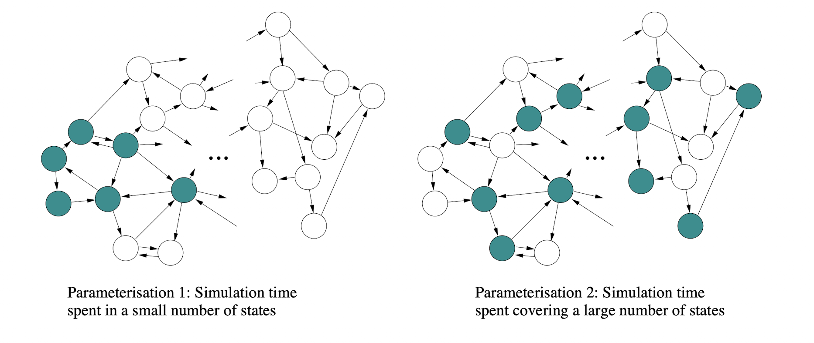

Confidence Intervals
Given \( n \) observations \( X_i, 1 \le i \le n \) for an unknown mean \( \mu \), the \( 100 \alpha \% \) confidence interval for \( \mu \) is given by:
\[ \overline{X} \pm {t_{n - 1, 1 - \alpha / 2} * S \over \sqrt{n}} \]
where \( t_{n - 1, 1 - \alpha / 2} \) is the result given by the t-distribution with \( n-1 \) degrees of freedom and a tail area of \( 1 - \alpha / 2 \). This confidence interval is exact (not an approximation) if:
\[ P \left( \overline{X} - {t_{n - 1, 1 - \alpha / 2} * S \over \sqrt{n}} \le \mu \le \overline{X} + {t_{n - 1, 1 - \alpha / 2} * S \over \sqrt{n}} \right) = \alpha \]
In practice, the confidence interval is typically an approximate because of one or more of the following reasons:
- \( n \) is too small (note that being too "small" depends on the distribution of the measurements).
- \( n \) is small and the measurements \( X_i \) are not normally distributed.
- The measurements \( X_i \) are not independent of each other.
Independent Measuring
To ensure that the measurements \( X_i \) are made independently, they can be made by running \( n \) independent replications (simulations).
Another method would be to run a single simulation to the point of (approximate) equilibrium, running back-to-back fixed time batches of measurements, resetting the measurements made at the end of each epoch:

where measurement \( X_i \) is the measurement made from batch \( i \). If \( X_i \) is also a mean, then this is called the batched means method. However, an issue with this method is that sequential measurements \( X_i \) and \( X_{i + 1} \) may be dependent if the simulation enters some edge case state.
Dealing with Dependent Measurements
If the measurements \( X_i \) are dependent, then the covariances must be taken into account to build an exact confidence interval. Looking back at the previous confidence interval, this makes the following assumption:
\[ VAR \left( \overline{X} \right) = {\sigma^2 \over n} + {1 \over n^2} \left[ 2 \sum_{i=1}^{n-1} \sum_{j=i+1}^{n} Cov(X_i, X_j) \right] \]
Since covariances are typically positive, then the variance estimate \( S^2 \over n \) will become an under-estimate of the actual variance \( VAR \left( \overline{X} \right) \). This means that the computed confidence intervals are narrower than they should be.
Bounding the Error from Simulations
The simulaton run length and/or number of observations collected could be adjusted to make the confidence interval half width less than or equal to some small percentage of the sample mean. That is:
\[ h \le c \overline{X} \]
where:
- \( h \) is the confidence interval half width of the collected data.
- \( c \) is some fixed small percentage.
This is done by:
- Fixing \( c \) to the desired accuracy level, for example \( 10 \% \).
- Run the simulation to obtain \( n \) independent (and if \( n \) is small, approximately normally-distributed) observations \( X_1, X_2, ... , X_n \).
- Compute \( \overline{X} \) and \( S \), then use these values to compute the half width of the \(100 \alpha \% \) confidence interval \( h \):
\[ h = {t_{n - 1,1 - \alpha / 2} * S \over \sqrt{n}} \]
- If \( h \gt c \overline{X} \) then increase the observation period and/or the number of replications (independent simulations) and repeat the experiment.
Since this is a feedback loop until a certain threshold is reached, this process can clearly be automated.
State Space Coverage
Take some arbitrary model and consider its underlying state space/transition system:

Assume that a simulation for this model is run for time \( T \) at (approximate) equilibrium and for every state \( s \) the time spent in state \( s \) is \( T_s \). This can be used to approximate the probability \( p_s \) of being in state \( s \):
\[ \hat{p}_s = {T_s \over T} \]
Note that measures such as the waiting time \( W \) can either be calculated directly or in terms of \( \hat{p}_s \) using Little's Law; the answers will be the same.
The quality of the estimate \( \hat{p}_s \) clearly depends on \( T \), but it also depends on the distribution of \( p_s \) where \( s \in S \):

In this diagram, the coloured states are the largest subset of states \( S' \subseteq S \) such that:
\[ inf \{ p_i | i \in S' \} \ge sup \{ p_j | j \in S - S' \} \]
and
\[ \sum_{i \in S'} p_i \le p_{max} \]
for some \( p_{max} \). These two equations simply split the states into two sets, where \( S' \) contains the highest probability states and \( S - S' \) contains the lowest probability states, and this split is defined by the parameter \( p_{max} \).
The left model shows a system under light load, whereas the right model show a system under heavy load. The confidence interval for the left model will be narrower than the right.